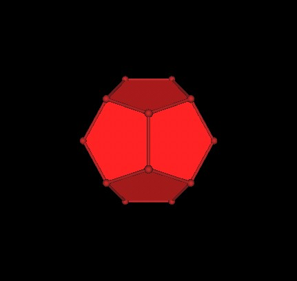
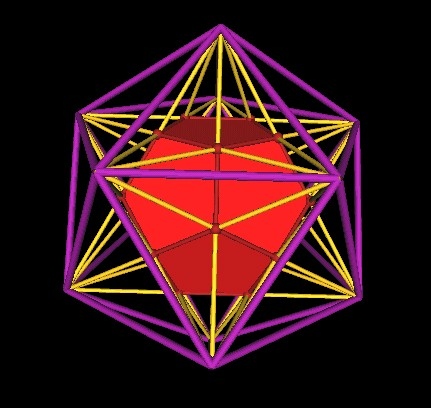
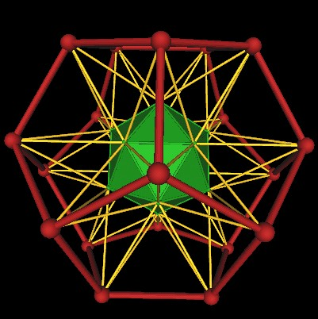
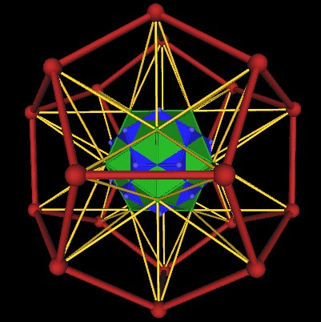

Dan Winter described the following scaling of the Icosahedron and regular Dodecahedron to me during a meeting in the Spring of 2001.
Consider the regular Dodecahedron.
|  |
| The Dodecahedron, part of the 120 Polyhedron construction. |
We can extend the edges of the Dodecahedron until they meet.
| Extending the edges of the Dodecahedron. |
Here is another point of view of the extended edges.
| Extending the edges of the Dodecahedron. |
Here is another point of view of the extended edges.
| Extending the edges of the Dodecahedron. |
If we now connect the outer most vertices, where the extended edges intersect one another, we end up with an Icosahedron.
| Extended Dodecahedron edges defines an Icosahedron. |
Another point of view.
|  |
| Extended Dodecahedron edges defines an Icosahedron. |
Recall that in the 120 Polyhedron, the regular Dodecahedron occurs with its dual, the Icosahedron. The size of the Icosahedron (green) in the 120 Polyhedron is such that its mid-edge points are also the mid-edge points of the Dodecahedron
| Dodecahedron, Icosahedron (green) dual pair in the 120 Polyhedron. |
We now have 2 Icosahedra: The green Icoahedron of the 120 Polyhedron and the purple Icosahedron constructed from extending the Dodecahedron's edges.
| Two Icosahedra. |
It turns out that if you scale the green Icosahedron by a factor of (Golden Mean), approx. 1.618..., that you end up with the purple Icosahedron.
Now lets do the same thing again (extending the edges of a polyhedron) but this time start if the Icosahedron in the 120 Polyhedron.
| Icosahedron of the 120 Polyhedron. |
Another point of view....
| Icosahedron of the 120 Polyhedron. |
We now extend the edges of the Icosahedron to the point at which they intersect one another.
| Extending the edges of the Icosahedron. |
Another point of view.
| Extending the edges of the Icosahedron. |
If we now connect the vertices defined by the extended edges' intersection points, we end up with the regular Dodecahedron.
|  |
| Extended edges of the Icosahedron defines a large Dodecahedron. |
Another point of view.
| Extended edges of the Icosahedron defines a large Dodecahedron. |
Another point of view.
| Extended edges of the Icosahedron defines a large Dodecahedron. |
The Icosahedron occurs with its dual, the Dodecahedron, in the 120 Polyhedron's construction. Here, the Dodecahedron in the 120 Polyhedron is shown in blue.
| Icosahedron's dual, the Dodecahedron (blue). |
Another point of View...
|  |
| Icosahedron's dual, the Dodecahedron (blue). |
If we take the blue Dodecahedron and scale it up by a factor of (Golden Mean)^2, that is, by the 2nd power of the Golden Mean, approx. 2.618..., we end up with the large Dodecahedron (red) defined by extending the edges of the Icosahedron.
We have seen here a scaling by factors of (Golden Mean) and (Golden Mean)^2. Note that
(Golden Mean)^2 = (GoldenMean) + 1.
Recall that the planes cutting through the 120 Polyhedron are spaced
(See this web page)
Plane 1: radius = 0;
Plane 2: radius = (golden Mean);
Plane 3: radius = (golden Mean)+1;
Plane 4: radius = (golden Mean)+1+(golden Mean);
Plane 5: radius = (golden Mean)+1+(golden Mean)+1;
There may be a strong connection between the scaling described here and the planes through the 120 Polyhedron.
Usage Note: My work is copyrighted. You may use my work but you may not include my work, or parts of it, in any for-profit project without my consent.